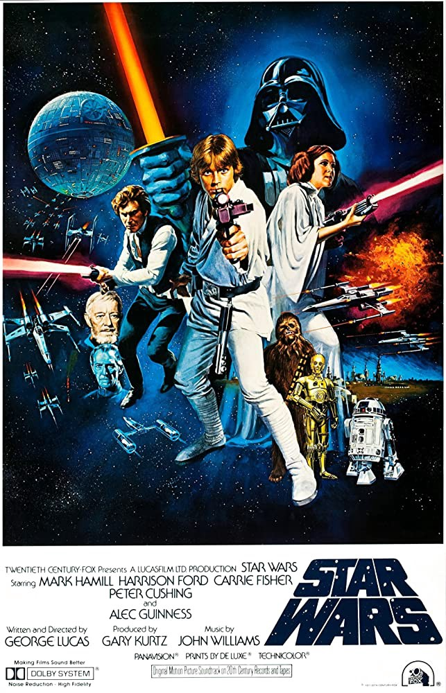
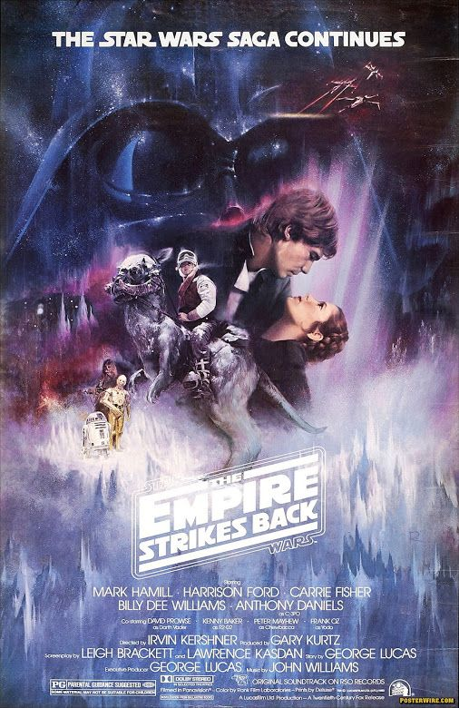

Original
Uma Nova Esperança
O jovem Luke Skywalker sonha ir para a Academia como seus amigos, mas se vê envolvido em uma guerra intergalática quando seu tio compra dois robôs, R2-D2 e C3PO. Ao mexer nos robôs, Luke encontra uma mensagem da princesa Leia Organa detinada ao Jedi Obi-Wan Kenobi sobre os planos da construção da Estrela da Morte, uma gigantesca estação espacial com capacidade para destruir um planeta. Luke então se junta ao cavaleiro Jedi, Han Solo e Chewbacca, para tentar destruir esta terrível ameaça ao lado dos membros da resistência.
Ano de Lançamento: 1977
Duração: 2h01m
Diretor: George Lucas
O Império Contra-Ataca
As forças imperais comandadas por Darth Vader) lançam um ataque contra os membros da resistência, que são obrigados a fugir. Enquanto isso, Luke Skywalker tenta encontrar o Mestre Yoda em Dagobah, que poderá ensiná-lo a dominar a Força e torná-lo um cavaleiro Jedi. No entanto, Darth Vader planeja levá-lo para o Lado Negro da Força.
Ano de Lançamento: 1980
Duração: 2h07m
Diretor: Irvin Kershner
O Retorno do Jedi

O Imperador Palpatine está supervisionando a construção de uma nova Estrela da Morte. Enquanto isso, Luke Skywalkerliberta Han Soloe a Princesa Leiadas mãos de Jabba, o pior bandido das galáxias. Luke só se tornará um cavaleiro Jedi quando destruir Darth Vader, que ainda pretende atraí-lo para o lado negro da Força. No entanto a luta entre os dois vai revelar um inesperado segredo.
Ano de Lançamento: 1983
Duração: 2h13m
Diretor: Richard Marquand